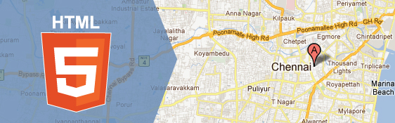

HTML 5 LOCATİON ELEMANLARI
HTML5'te, Geolocation API'ları sayesinde, sayfanızı ziyaret edenler, kendi fiziksel konumlarını sizin web uygulamanızla paylaşabilirler. Bu tür uygulamalarda tarayıcı, kullanıcının konumunu paylaşmak isteyip istemediğini soracaktır. O andaki konum bilgisi ve ziyaretçinin IP adresi, en yakın kablosuz ağ erişim noktasından alınır.
Bulunduğunuz enlem ve boylamı, JavaScript yardımıyla belirleyip arka planda web sunucusuna gönderebilirsiniz. Sonuç olarak belirlenen konumu harita üzerinde gösterebilir, belli bir adresi arayabilirsiniz.
Kullanıcı konum bilgilerini almak için Javascript kullanımına girceğimiz için bu uygulamaları daha sonraki Javascript derslerimizde bahsedeceğiz.
@2016 Contact abdullahcelik6@gmail.com